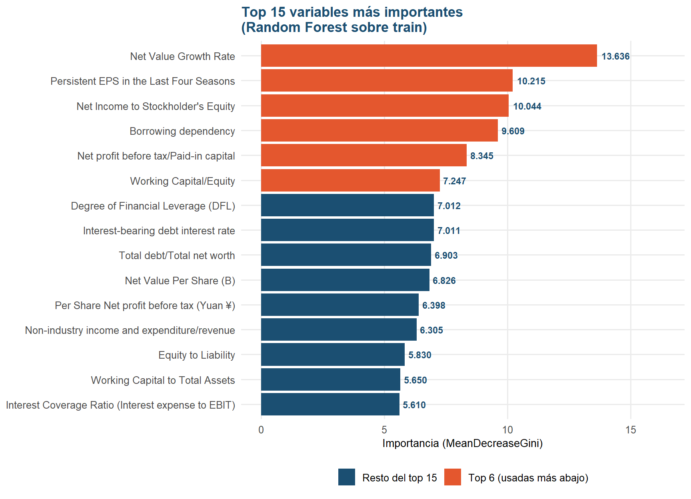
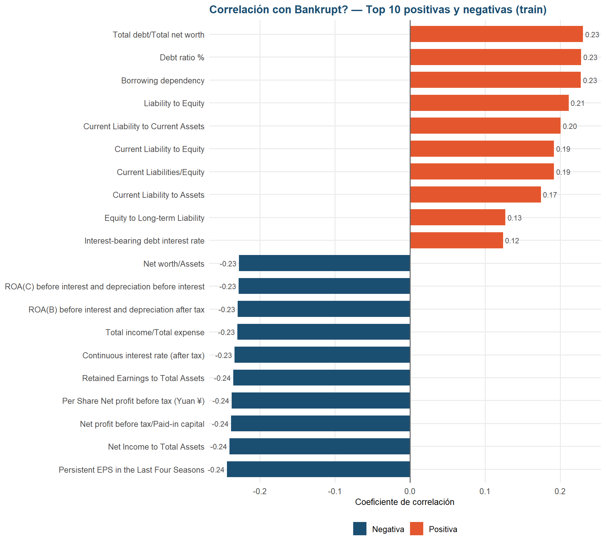
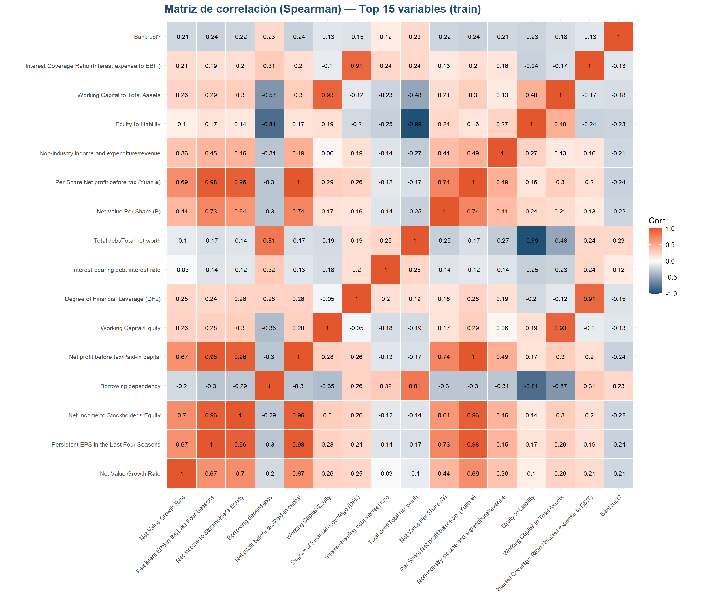

Capítulo 6 Análisis bivariado: variables vs. objetivo (sobre train)
6.1 Variables más importantes según Random Forest
Usamos un Random Forest entrenado únicamente con train para tener una primera
idea de qué variables separan mejor a las empresas que quiebran de las que no. Esto es
solo exploratorio: nos ayuda a elegir qué variables mirar con más detalle en los
gráficos siguientes, no es el modelo final del proyecto.
¿Por qué Random Forest? Se eligió porque no necesita que las variables estén en la misma escala ni sigan una relación lineal con la quiebra, es robusto ante los outliers que ya se identificaron en los datos y entrega una medida de importancia de variables por defecto, facilitando la interpretación para fines exploratorios.
# Nota metodológica: la imputación con la mediana que se hace aquí es temporal y
# solo existe para poder entrenar el Random Forest exploratorio; no se aplica a
# train_df ni al dataset real. La imputación definitiva se decide en la etapa de
# preprocesamiento, después del EDA.
X_rf <- train_df %>% select(-all_of(TARGET), -`Net Income Flag`)
X_rf <- X_rf %>%
mutate(across(everything(), ~ ifelse(is.infinite(.x), NA, .x))) %>%
mutate(across(everything(), ~ ifelse(is.na(.x), median(.x, na.rm = TRUE), .x)))
y_train_factor <- factor(train_df[[TARGET]], levels = c(0, 1),
labels = c("No", "Si"))
set.seed(RANDOM_STATE)
rf <- randomForest(x = X_rf, y = y_train_factor, ntree = 100, importance = TRUE)
# MeanDecreaseGini es el equivalente conceptual a feature_importances_ de sklearn
importancias <- importance(rf, type = 2)[, 1]
importancias <- sort(importancias, decreasing = TRUE)
cat("============================================================\n")## ============================================================## TOP 15 VARIABLES MÁS IMPORTANTES (Random Forest, train)## ============================================================## Net Value Growth Rate Persistent EPS in the Last Four Seasons
## 13.636 10.215
## Net Income to Stockholder's Equity Borrowing dependency
## 10.044 9.609
## Net profit before tax/Paid-in capital Working Capital/Equity
## 8.345 7.247
## Degree of Financial Leverage (DFL) Interest-bearing debt interest rate
## 7.012 7.011
## Total debt/Total net worth Net Value Per Share (B)
## 6.903 6.826
## Per Share Net profit before tax (Yuan ¥) Non-industry income and expenditure/revenue
## 6.398 6.305
## Equity to Liability Working Capital to Total Assets
## 5.830 5.650
## Interest Coverage Ratio (Interest expense to EBIT)
## 5.610top_15_features <- names(head(importancias, 15))
top_6_features <- names(head(importancias, 6))
df_imp <- tibble(variable = names(head(importancias, 15)),
importancia = as.numeric(head(importancias, 15))) %>%
mutate(top6 = variable %in% top_6_features)
ggplot(df_imp, aes(x = reorder(variable, importancia), y = importancia, fill = top6)) +
geom_col() +
geom_text(aes(label = sprintf("%.3f", importancia)), hjust = -0.15, size = 3,
fontface = "bold", color = COLOR_MAIN) +
coord_flip(clip = "off") +
scale_fill_manual(values = c(`TRUE` = COLOR_RISK, `FALSE` = COLOR_MAIN),
labels = c(`TRUE` = "Top 6 (usadas más abajo)",
`FALSE` = "Resto del top 15"),
name = NULL) +
labs(title = "Top 15 variables más importantes\n(Random Forest sobre train)",
x = NULL, y = "Importancia (MeanDecreaseGini)") +
expand_limits(y = max(df_imp$importancia) * 1.2) +
tema_eda +
theme(legend.position = "bottom")
¿Qué hizo Random Forest aquí? Es un modelo que, al entrenarse, mide qué tanto le “ayudó” cada variable para diferenciar empresas que quiebran de las que no. Cuanto mayor el número de importancia, más útil fue esa variable para el modelo. Entre las más importantes suelen aparecer variables de rentabilidad para el accionista (
Net Income to Stockholder's Equity), márgenes operativos y ratios de endeudamiento — lo cual tiene sentido: una empresa que no genera ganancias para sus dueños y está muy endeudada es, intuitivamente, más propensa a quebrar.
Random Forest se utiliza aquí como una herramienta exploratoria, no como un ranking definitivo de importancia. Dos sesgos conocidos a tener en cuenta:
- Favorece variables continuas sobre categóricas: una variable binaria como
Liability-Assets Flagcasi nunca aparecerá entre las “más importantes”, aunque sí sea relevante. - Reparte la importancia entre variables correlacionadas: cuando varias variables miden algo muy parecido (como las distintas versiones de ROA), el modelo divide el “crédito” entre ellas, lo que puede subestimar su relevancia individual.
6.2 Variables más importantes vs. objetivo
plot_box_target <- function(var) {
q1 <- quantile(train_df[[var]], 0.01, na.rm = TRUE)
q99 <- quantile(train_df[[var]], 0.99, na.rm = TRUE)
df_f <- train_df %>% filter(.data[[var]] >= q1, .data[[var]] <= q99)
ggplot(df_f, aes(x = as.factor(.data[[TARGET]]), y = .data[[var]],
fill = as.factor(.data[[TARGET]]))) +
geom_boxplot(width = 0.45, outlier.alpha = 0.35, outlier.size = 1.2) +
scale_x_discrete(labels = TARGET_LABELS) +
scale_fill_manual(values = TARGET_COLORS) +
labs(title = str_wrap(var, 32), x = NULL, y = var) +
tema_eda
}
wrap_plots(lapply(top_6_features, plot_box_target), ncol = 3) +
plot_annotation(
title = "Variables más importantes vs. objetivo\n(train, sin el 1% de valores más extremos)",
theme = theme(plot.title = element_text(face = "bold", size = 15))
)
Estos boxplots comparan la distribución de cada variable entre empresas que quebraron y que no, y muestran patrones distintos según el tipo de variable:
- Variables de rentabilidad (
Net Income to Stockholder's Equity,Persistent EPS in the Last Four Seasons,Net profit before tax/Paid-in capital): en las tres, el grupo que quebró tiene medianas más bajas y cajas más dispersas (sobre todoNet Income to Stockholder's Equity, donde la caja de “Quiebra” es mucho más ancha). Esto confirma que las empresas que quiebran tienden a ser menos rentables, y de forma menos homogénea — hay más variedad de situaciones dentro de ese grupo. Borrowing dependency: suele ser el panel con la separación más clara — el grupo “Quiebra” tiene una mediana notablemente más alta y su caja casi no se superpone con la de “No quiebra”. Confirma, en la práctica, lo que ya muestra la correlación más adelante: mayor dependencia de financiamiento externo se asocia con mayor riesgo de quiebra.Net Value Growth RateeInterest Expense Ratio: aquí la diferencia entre grupos suele ser mínima — las cajas se superponen bastante y las medianas están muy cerca. Son variables que el Random Forest consideró relevantes en conjunto con las demás, pero que por sí solas, vistas de forma aislada, no separan claramente a las empresas que quiebran.
En conjunto, el patrón refuerza lo que se venía viendo en la sección: rentabilidad baja y endeudamiento alto son las señales más visibles de riesgo, mientras que otras variables importantes para el modelo probablemente aportan valor más por su interacción con las demás que por separarse solas en un boxplot.
Nota: dependiendo de la partición train/test que te haya tocado, es posible que
el orden exacto de las 6 variables top varíe un poco respecto a esta descripción —
ajusta los nombres si es necesario.
6.3 Comparación bivariada de las 93 variables numéricas
Antes de entrar en pruebas formales, se resumen las 93 variables numéricas en una sola tabla (en vez de mirarlas una por una), ordenada por la fuerza de su relación con el objetivo. Aquí ya se usa correlación de Spearman en vez de Pearson; la justificación completa está en la sección de correlaciones más adelante, pero en resumen: con 93 variables no es viable verificar normalidad una por una, y ya se documentó sesgo y outliers fuertes que distorsionan a Pearson.
corr_spearman_objetivo <- sapply(train_df[num_vars], function(x) {
cor(x, train_df[[TARGET]], method = "spearman", use = "pairwise.complete.obs")
})
tabla_bivariada <- tibble(
Variable = num_vars,
`Correlación Spearman (r)` = corr_spearman_objetivo[num_vars],
`Media (No quiebra)` = sapply(num_vars, function(v)
mean(train_df[[v]][train_df[[TARGET]] == 0], na.rm = TRUE)),
`Media (Quiebra)` = sapply(num_vars, function(v)
mean(train_df[[v]][train_df[[TARGET]] == 1], na.rm = TRUE)),
`Mediana (No quiebra)` = sapply(num_vars, function(v)
median(train_df[[v]][train_df[[TARGET]] == 0], na.rm = TRUE)),
`Mediana (Quiebra)` = sapply(num_vars, function(v)
median(train_df[[v]][train_df[[TARGET]] == 1], na.rm = TRUE))
) %>%
arrange(desc(abs(`Correlación Spearman (r)`)))
tabla_bivariada %>%
kable(digits = 4,
caption = "Comparación bivariada de las 93 variables numéricas vs. Bankrupt? (ordenadas por relevancia)") %>%
kable_styling(bootstrap_options = c("striped", "hover", "condensed"),
full_width = FALSE, font_size = 12) %>%
scroll_box(height = "420px")| Variable | Correlación Spearman (r) | Media (No quiebra) | Media (Quiebra) | Mediana (No quiebra) | Mediana (Quiebra) |
|---|---|---|---|---|---|
| Persistent EPS in the Last Four Seasons | -0.2437 | 2.301000e-01 | 1.893000e-01 | 2.253e-01 | 1.969e-01 |
| Net Income to Total Assets | -0.2403 | 8.101000e-01 | 7.402000e-01 | 8.116e-01 | 7.645e-01 |
| Net profit before tax/Paid-in capital | -0.2382 | 1.837000e-01 | 1.479000e-01 | 1.791e-01 | 1.551e-01 |
| Per Share Net profit before tax (Yuan ¥) | -0.2375 | 1.855000e-01 | 1.481000e-01 | 1.804e-01 | 1.555e-01 |
| Retained Earnings to Total Assets | -0.2356 | 9.356000e-01 | 9.056000e-01 | 9.381e-01 | 9.123e-01 |
| Continuous interest rate (after tax) | -0.2338 | 7.815000e-01 | 7.808000e-01 | 7.816e-01 | 7.813e-01 |
| Total debt/Total net worth | 0.2305 | 5.056937e+06 | 1.855615e+07 | 5.400e-03 | 1.570e-02 |
| Total income/Total expense | -0.2300 | 2.400000e-03 | 2.100000e-03 | 2.300e-03 | 2.000e-03 |
| ROA(B) before interest and depreciation after tax | -0.2296 | 5.569000e-01 | 4.631000e-01 | 5.544e-01 | 4.885e-01 |
| ROA(C) before interest and depreciation before interest | -0.2281 | 5.083000e-01 | 4.191000e-01 | 5.049e-01 | 4.431e-01 |
| Debt ratio % | 0.2280 | 1.108000e-01 | 1.889000e-01 | 1.092e-01 | 1.874e-01 |
| Net worth/Assets | -0.2280 | 8.892000e-01 | 8.111000e-01 | 8.908e-01 | 8.126e-01 |
| Equity to Liability | -0.2280 | 4.850000e-02 | 2.440000e-02 | 3.450e-02 | 1.870e-02 |
| ROA(A) before interest and % after tax | -0.2279 | 5.621000e-01 | 4.586000e-01 | 5.618e-01 | 4.901e-01 |
| Borrowing dependency | 0.2277 | 3.740000e-01 | 3.923000e-01 | 3.725e-01 | 3.827e-01 |
| After-tax net Interest Rate | -0.2257 | 8.092000e-01 | 8.084000e-01 | 8.094e-01 | 8.091e-01 |
| Net Income to Stockholder’s Equity | -0.2245 | 8.409000e-01 | 8.245000e-01 | 8.412e-01 | 8.367e-01 |
| Pre-tax net Interest Rate | -0.2237 | 7.973000e-01 | 7.965000e-01 | 7.975e-01 | 7.971e-01 |
| Net Value Per Share (B) | -0.2153 | 1.913000e-01 | 1.601000e-01 | 1.849e-01 | 1.579e-01 |
| Net Value Per Share (A) | -0.2151 | 1.913000e-01 | 1.600000e-01 | 1.850e-01 | 1.579e-01 |
| Net Value Per Share (C) | -0.2135 | 1.913000e-01 | 1.602000e-01 | 1.850e-01 | 1.579e-01 |
| Quick Ratio | -0.2124 | 8.094515e+06 | 4.935829e+07 | 7.600e-03 | 2.700e-03 |
| Liability to Equity | 0.2114 | 2.799000e-01 | 2.953000e-01 | 2.787e-01 | 2.858e-01 |
| Non-industry income and expenditure/revenue | -0.2085 | 3.035000e-01 | 3.025000e-01 | 3.035e-01 | 3.033e-01 |
| Net Value Growth Rate | -0.2083 | 2.562156e+05 | 4.989305e+07 | 5.000e-04 | 4.000e-04 |
| Current Ratio | -0.2008 | 5.219207e+05 | 6.800000e-03 | 1.070e-02 | 5.900e-03 |
| Current Liability to Current Assets | 0.2007 | 3.040000e-02 | 6.340000e-02 | 2.720e-02 | 4.880e-02 |
| Operating Profit Per Share (Yuan ¥) | -0.1993 | 1.097000e-01 | 8.700000e-02 | 1.048e-01 | 9.030e-02 |
| Operating profit/Paid-in capital | -0.1991 | 1.096000e-01 | 8.710000e-02 | 1.046e-01 | 9.040e-02 |
| Quick Assets/Current Liability | -0.1990 | 4.649839e+06 | 4.700000e-03 | 8.100e-03 | 3.400e-03 |
| Current Liabilities/Equity | 0.1918 | 3.310000e-01 | 3.443000e-01 | 3.296e-01 | 3.355e-01 |
| Current Liability to Equity | 0.1918 | 3.310000e-01 | 3.443000e-01 | 3.296e-01 | 3.355e-01 |
| Operating Profit Rate | -0.1883 | 9.989000e-01 | 9.987000e-01 | 9.990e-01 | 9.989e-01 |
| Working Capital to Total Assets | -0.1847 | 8.160000e-01 | 7.477000e-01 | 8.108e-01 | 7.498e-01 |
| Operating profit per person | -0.1770 | 4.013000e-01 | 3.840000e-01 | 3.961e-01 | 3.885e-01 |
| Current Liability to Assets | 0.1743 | 8.890000e-02 | 1.439000e-01 | 8.050e-02 | 1.451e-01 |
| Tax rate (A) | -0.1588 | 1.178000e-01 | 3.540000e-02 | 8.320e-02 | 0.000e+00 |
| Cash/Total Assets | -0.1587 | 1.259000e-01 | 4.530000e-02 | 7.620e-02 | 2.320e-02 |
| Cash/Current Liability | -0.1562 | 3.160315e+07 | 2.505241e+08 | 5.000e-03 | 1.200e-03 |
| Operating Gross Margin | -0.1539 | 6.084000e-01 | 5.985000e-01 | 6.063e-01 | 5.986e-01 |
| Gross Profit to Sales | -0.1539 | 6.084000e-01 | 5.985000e-01 | 6.063e-01 | 5.986e-01 |
| Realized Sales Gross Margin | -0.1526 | 6.083000e-01 | 5.985000e-01 | 6.063e-01 | 5.988e-01 |
| Cash flow rate | -0.1503 | 4.677000e-01 | 4.611000e-01 | 4.653e-01 | 4.613e-01 |
| Operating Funds to Liability | -0.1501 | 3.544000e-01 | 3.403000e-01 | 3.490e-01 | 3.404e-01 |
| Working capitcal Turnover Rate | -0.1490 | 5.939000e-01 | 5.938000e-01 | 5.940e-01 | 5.939e-01 |
| Degree of Financial Leverage (DFL) | -0.1479 | 2.760000e-02 | 2.860000e-02 | 2.680e-02 | 2.670e-02 |
| CFO to Assets | -0.1348 | 5.947000e-01 | 5.572000e-01 | 5.943e-01 | 5.629e-01 |
| Cash Flow Per Share | -0.1337 | 3.237000e-01 | 3.165000e-01 | 3.227e-01 | 3.172e-01 |
| Working Capital/Equity | -0.1332 | 7.361000e-01 | 7.250000e-01 | 7.360e-01 | 7.325e-01 |
| Interest Expense Ratio | -0.1305 | 6.309000e-01 | 6.315000e-01 | 6.307e-01 | 6.303e-01 |
| Equity to Long-term Liability | 0.1272 | 1.150000e-01 | 1.323000e-01 | 1.123e-01 | 1.186e-01 |
| Interest Coverage Ratio (Interest expense to EBIT) | -0.1266 | 5.654000e-01 | 5.650000e-01 | 5.653e-01 | 5.647e-01 |
| Long-term fund suitability ratio (A) | -0.1266 | 8.400000e-03 | 1.230000e-02 | 5.700e-03 | 5.200e-03 |
| After-tax Net Profit Growth Rate | -0.1240 | 6.893000e-01 | 6.861000e-01 | 6.894e-01 | 6.892e-01 |
| Interest-bearing debt interest rate | 0.1239 | 1.789808e+07 | 3.262032e+06 | 3.000e-04 | 5.000e-04 |
| Continuous Net Profit Growth Rate | -0.1224 | 2.177000e-01 | 2.171000e-01 | 2.176e-01 | 2.176e-01 |
| Regular Net Profit Growth Rate | -0.1217 | 6.893000e-01 | 6.862000e-01 | 6.894e-01 | 6.892e-01 |
| No-credit Interval | -0.1173 | 6.239000e-01 | 6.235000e-01 | 6.239e-01 | 6.235e-01 |
| Long-term Liability to Current Assets | 0.1022 | 5.389565e+07 | 6.657754e+07 | 1.900e-03 | 6.600e-03 |
| Total Asset Return Growth Rate Ratio | -0.1020 | 2.642000e-01 | 2.634000e-01 | 2.641e-01 | 2.637e-01 |
| Allocation rate per person | 0.1003 | 1.098121e+07 | 1.860963e+07 | 7.800e-03 | 1.450e-02 |
| Cash Reinvestment % | -0.0996 | 3.799000e-01 | 3.706000e-01 | 3.806e-01 | 3.755e-01 |
| Cash Flow to Sales | -0.0977 | 6.715000e-01 | 6.716000e-01 | 6.716e-01 | 6.716e-01 |
| Cash Flow to Equity | -0.0967 | 3.156000e-01 | 3.112000e-01 | 3.150e-01 | 3.136e-01 |
| Realized Sales Gross Profit Growth Rate | -0.0966 | 2.250000e-02 | 2.240000e-02 | 2.210e-02 | 2.210e-02 |
| Quick Assets/Total Assets | -0.0946 | 4.034000e-01 | 2.974000e-01 | 3.878e-01 | 2.629e-01 |
| Operating Profit Growth Rate | -0.0939 | 8.480000e-01 | 8.470000e-01 | 8.480e-01 | 8.480e-01 |
| Cash Flow to Total Assets | -0.0934 | 6.501000e-01 | 6.315000e-01 | 6.455e-01 | 6.385e-01 |
| Total Asset Turnover | -0.0904 | 1.431000e-01 | 1.052000e-01 | 1.199e-01 | 8.400e-02 |
| Total Asset Growth Rate | -0.0893 | 5.553543e+09 | 4.812854e+09 | 6.450e+09 | 5.370e+09 |
| Total expense/Assets | 0.0861 | 2.860000e-02 | 4.930000e-02 | 2.250e-02 | 3.250e-02 |
| Cash Flow to Liability | -0.0835 | 4.622000e-01 | 4.560000e-01 | 4.598e-01 | 4.587e-01 |
| Inventory and accounts receivable/Net value | 0.0825 | 4.022000e-01 | 4.084000e-01 | 4.001e-01 | 4.036e-01 |
| Revenue Per Share (Yuan ¥) | -0.0752 | 1.719491e+06 | 2.690000e-02 | 2.760e-02 | 1.920e-02 |
| Inventory/Working Capital | -0.0662 | 2.773000e-01 | 2.773000e-01 | 2.772e-01 | 2.770e-01 |
| Inventory/Current Liability | -0.0662 | 5.753488e+07 | 6.873797e+07 | 6.600e-03 | 4.200e-03 |
| Fixed Assets to Assets | 0.0639 | 2.491000e-01 | 4.449198e+07 | 1.973e-01 | 3.074e-01 |
| Total assets to GNP price | 0.0634 | 1.685595e+07 | 5.802139e+07 | 2.100e-03 | 3.900e-03 |
| Current Asset Turnover Rate | 0.0580 | 1.181942e+09 | 1.571192e+09 | 2.000e-04 | 3.000e-04 |
| Current Assets/Total Assets | -0.0577 | 5.235000e-01 | 4.530000e-01 | 5.147e-01 | 4.266e-01 |
| Fixed Assets Turnover Frequency | 0.0520 | 9.852887e+08 | 2.001886e+09 | 6.000e-04 | 1.200e-03 |
| Research and development expense rate | -0.0431 | 1.991220e+09 | 1.577573e+09 | 5.600e+08 | 1.530e+08 |
| Contingent liabilities/Net worth | 0.0390 | 5.800000e-03 | 1.150000e-02 | 5.400e-03 | 5.400e-03 |
| Quick Asset Turnover Rate | 0.0387 | 2.133945e+09 | 2.612107e+09 | 2.000e-04 | 5.000e-04 |
| Current Liabilities/Liability | -0.0323 | 7.618000e-01 | 7.308000e-01 | 8.073e-01 | 7.709e-01 |
| Current Liability to Liability | -0.0323 | 7.618000e-01 | 7.308000e-01 | 8.073e-01 | 7.709e-01 |
| Revenue per person | 0.0284 | 1.672044e+06 | 3.770053e+07 | 1.850e-02 | 2.030e-02 |
| Average Collection Days | 0.0205 | 9.747011e+06 | 7.326203e+05 | 6.600e-03 | 6.600e-03 |
| Cash Turnover Rate | 0.0186 | 2.478573e+09 | 2.107919e+09 | 1.110e+09 | 1.300e+09 |
| Accounts Receivable Turnover | -0.0167 | 1.364566e+07 | 6.524064e+06 | 1.000e-03 | 1.000e-03 |
| Net Worth Turnover Rate (times) | 0.0138 | 3.850000e-02 | 4.230000e-02 | 2.950e-02 | 3.160e-02 |
| Inventory Turnover Rate (times) | 0.0090 | 2.128320e+09 | 2.053150e+09 | 7.000e-04 | 1.910e+07 |
| Operating Expense Rate | 0.0087 | 2.017366e+09 | 1.892626e+09 | 3.000e-04 | 3.000e-04 |
La tabla confirma, a nivel general, lo que ya se venía observando: las variables mejor
posicionadas (mayor |r|) combinan medias/medianas claramente distintas entre
empresas sanas y quebradas, mientras que las últimas filas tienen valores casi
idénticos entre ambos grupos — es decir, aportan poco de forma univariada.
6.4 Inferencia estadística: variables numéricas vs. objetivo
El análisis descriptivo y los boxplots anteriores sugieren diferencias entre empresas solventes y quebradas, pero no permiten determinar si esas diferencias son compatibles con la variabilidad muestral. La inferencia estadística contrasta, para cada ratio:
- H₀: la distribución del ratio es igual en empresas que no quiebran y en empresas que sí quiebran.
- H₁: la distribución del ratio difiere entre ambos estados de quiebra.
Se usa \(\alpha = 0.05\). Como el objetivo es binario e independiente de cada ratio numérico, se comparan dos grupos independientes (0 = no quiebra; 1 = quiebra).
Selección de la prueba: se evalúa normalidad razonable en ambos grupos con Shapiro-Wilk (máximo 5.000 observaciones por grupo, muestreadas con semilla fija), sesgo y porcentaje de outliers (IQR); Levene se reporta solo como diagnóstico adicional. En estos datos, las 93 variables incumplen la normalidad razonable, así que se usa Mann-Whitney U bilateral para todas. Como tamaño de efecto se reporta la correlación biserial de rangos (\(r_{rb}\), entre -1 y 1): positivo indica que el ratio tiende a ser mayor en empresas sin quiebra; negativo, mayor en empresas quebradas. Guía descriptiva de magnitud: \(|r_{rb}|\approx 0.10\) pequeño, \(0.30\) moderado, \(0.50\) grande.
# Requiere el paquete car para Levene (install.packages("car") si hace falta)
ALPHA <- 0.05
inferencia_una_var <- function(var) {
grupo_0 <- train_df[[var]][train_df[[TARGET]] == 0]
grupo_1 <- train_df[[var]][train_df[[TARGET]] == 1]
grupo_0 <- grupo_0[!is.na(grupo_0)]
grupo_1 <- grupo_1[!is.na(grupo_1)]
set.seed(RANDOM_STATE)
muestra_0 <- if (length(grupo_0) > 5000) sample(grupo_0, 5000) else grupo_0
p_shapiro_0 <- shapiro.test(muestra_0)$p.value
p_shapiro_1 <- shapiro.test(grupo_1)$p.value
grupo_f <- factor(c(rep("0", length(grupo_0)), rep("1", length(grupo_1))))
p_levene <- car::leveneTest(c(grupo_0, grupo_1) ~ grupo_f, center = median)$`Pr(>F)`[1]
sesgo_0 <- e1071::skewness(grupo_0, type = 2)
sesgo_1 <- e1071::skewness(grupo_1, type = 2)
pct_out_0 <- pct_outliers_iqr(grupo_0)
pct_out_1 <- pct_outliers_iqr(grupo_1)
normalidad_razonable <- p_shapiro_0 >= ALPHA && p_shapiro_1 >= ALPHA &&
abs(sesgo_0) <= 1 && abs(sesgo_1) <= 1 && max(pct_out_0, pct_out_1) <= 5
prueba <- wilcox.test(grupo_0, grupo_1, alternative = "two.sided", exact = FALSE)
U <- as.numeric(prueba$statistic)
n0 <- length(grupo_0); n1 <- length(grupo_1)
tibble(
Variable = var, `N (0)` = n0, `N (1)` = n1,
`Mediana (0)` = median(grupo_0), `Mediana (1)` = median(grupo_1),
`p Shapiro (0)` = p_shapiro_0, `p Shapiro (1)` = p_shapiro_1, `p Levene` = p_levene,
`Normalidad razonable` = normalidad_razonable,
U = U, `p-value` = prueba$p.value,
`r biserial` = 2 * U / (n0 * n1) - 1
)
}
resultados_inferencia_num <- map_dfr(num_vars, inferencia_una_var)
# Holm controla el error familiar entre las 93 pruebas y es menos conservador
# que Bonferroni; p.adjust(method = "holm") ya implementa Holm-Bonferroni.
resultados_inferencia_num <- resultados_inferencia_num %>%
mutate(`p ajustado (Holm)` = p.adjust(`p-value`, method = "holm"),
Decisión = ifelse(`p ajustado (Holm)` < ALPHA, "Se rechaza H0", "No se rechaza H0")) %>%
arrange(`p ajustado (Holm)`)
resultados_inferencia_num %>%
select(Variable, `N (0)`, `N (1)`, `Mediana (0)`, `Mediana (1)`,
U, `p-value`, `p ajustado (Holm)`, `r biserial`, Decisión) %>%
kable(digits = c(0, 0, 0, 4, 4, 1, 3, 3, 3, 0)) %>%
kable_styling(bootstrap_options = c("striped", "hover", "condensed"),
full_width = FALSE, font_size = 12) %>%
scroll_box(height = "420px")| Variable | N (0) | N (1) | Mediana (0) | Mediana (1) | U | p-value | p ajustado (Holm) | r biserial | Decisión |
|---|---|---|---|---|---|---|---|---|---|
| ROA(C) before interest and depreciation before interest | 5269 | 187 | 5.049e-01 | 4.431e-01 | 849233.5 | 0.000 | 0.000 | 0.724 | Se rechaza H0 |
| ROA(A) before interest and % after tax | 5269 | 187 | 5.618e-01 | 4.901e-01 | 848899.0 | 0.000 | 0.000 | 0.723 | Se rechaza H0 |
| ROA(B) before interest and depreciation after tax | 5269 | 187 | 5.544e-01 | 4.885e-01 | 851613.5 | 0.000 | 0.000 | 0.729 | Se rechaza H0 |
| Operating Gross Margin | 5269 | 187 | 6.063e-01 | 5.986e-01 | 733281.5 | 0.000 | 0.000 | 0.488 | Se rechaza H0 |
| Realized Sales Gross Margin | 5269 | 187 | 6.063e-01 | 5.988e-01 | 731230.0 | 0.000 | 0.000 | 0.484 | Se rechaza H0 |
| Operating Profit Rate | 5269 | 187 | 9.990e-01 | 9.989e-01 | 787093.5 | 0.000 | 0.000 | 0.598 | Se rechaza H0 |
| Pre-tax net Interest Rate | 5269 | 187 | 7.975e-01 | 7.971e-01 | 842347.5 | 0.000 | 0.000 | 0.710 | Se rechaza H0 |
| After-tax net Interest Rate | 5269 | 187 | 8.094e-01 | 8.091e-01 | 845457.5 | 0.000 | 0.000 | 0.716 | Se rechaza H0 |
| Non-industry income and expenditure/revenue | 5269 | 187 | 3.035e-01 | 3.033e-01 | 818570.5 | 0.000 | 0.000 | 0.662 | Se rechaza H0 |
| Continuous interest rate (after tax) | 5269 | 187 | 7.816e-01 | 7.813e-01 | 858210.0 | 0.000 | 0.000 | 0.742 | Se rechaza H0 |
| Cash flow rate | 5269 | 187 | 4.653e-01 | 4.613e-01 | 727607.0 | 0.000 | 0.000 | 0.477 | Se rechaza H0 |
| Tax rate (A) | 5269 | 187 | 8.320e-02 | 0.000e+00 | 734302.0 | 0.000 | 0.000 | 0.491 | Se rechaza H0 |
| Net Value Per Share (B) | 5269 | 187 | 1.849e-01 | 1.579e-01 | 829304.0 | 0.000 | 0.000 | 0.683 | Se rechaza H0 |
| Net Value Per Share (A) | 5269 | 187 | 1.850e-01 | 1.579e-01 | 828915.5 | 0.000 | 0.000 | 0.683 | Se rechaza H0 |
| Net Value Per Share (C) | 5269 | 187 | 1.850e-01 | 1.579e-01 | 826500.0 | 0.000 | 0.000 | 0.678 | Se rechaza H0 |
| Persistent EPS in the Last Four Seasons | 5269 | 187 | 2.253e-01 | 1.969e-01 | 873690.0 | 0.000 | 0.000 | 0.773 | Se rechaza H0 |
| Cash Flow Per Share | 5269 | 187 | 3.227e-01 | 3.172e-01 | 701695.5 | 0.000 | 0.000 | 0.424 | Se rechaza H0 |
| Operating Profit Per Share (Yuan ¥) | 5269 | 187 | 1.048e-01 | 9.030e-02 | 804304.0 | 0.000 | 0.000 | 0.633 | Se rechaza H0 |
| Per Share Net profit before tax (Yuan ¥) | 5269 | 187 | 1.804e-01 | 1.555e-01 | 863984.5 | 0.000 | 0.000 | 0.754 | Se rechaza H0 |
| After-tax Net Profit Growth Rate | 5269 | 187 | 6.894e-01 | 6.892e-01 | 686456.0 | 0.000 | 0.000 | 0.393 | Se rechaza H0 |
| Regular Net Profit Growth Rate | 5269 | 187 | 6.894e-01 | 6.892e-01 | 682848.5 | 0.000 | 0.000 | 0.386 | Se rechaza H0 |
| Continuous Net Profit Growth Rate | 5269 | 187 | 2.176e-01 | 2.176e-01 | 683955.5 | 0.000 | 0.000 | 0.388 | Se rechaza H0 |
| Net Value Growth Rate | 5269 | 187 | 5.000e-04 | 4.000e-04 | 818271.5 | 0.000 | 0.000 | 0.661 | Se rechaza H0 |
| Current Ratio | 5269 | 187 | 1.070e-02 | 5.900e-03 | 806608.0 | 0.000 | 0.000 | 0.637 | Se rechaza H0 |
| Quick Ratio | 5269 | 187 | 7.600e-03 | 2.700e-03 | 824757.0 | 0.000 | 0.000 | 0.674 | Se rechaza H0 |
| Interest Expense Ratio | 5269 | 187 | 6.307e-01 | 6.303e-01 | 696667.5 | 0.000 | 0.000 | 0.414 | Se rechaza H0 |
| Net worth/Assets | 5269 | 187 | 8.908e-01 | 8.126e-01 | 849107.0 | 0.000 | 0.000 | 0.724 | Se rechaza H0 |
| Long-term fund suitability ratio (A) | 5269 | 187 | 5.700e-03 | 5.200e-03 | 690555.0 | 0.000 | 0.000 | 0.402 | Se rechaza H0 |
| Operating profit/Paid-in capital | 5269 | 187 | 1.046e-01 | 9.040e-02 | 803935.0 | 0.000 | 0.000 | 0.632 | Se rechaza H0 |
| Net profit before tax/Paid-in capital | 5269 | 187 | 1.791e-01 | 1.551e-01 | 864992.0 | 0.000 | 0.000 | 0.756 | Se rechaza H0 |
| Operating profit per person | 5269 | 187 | 3.961e-01 | 3.885e-01 | 769433.5 | 0.000 | 0.000 | 0.562 | Se rechaza H0 |
| Working Capital to Total Assets | 5269 | 187 | 8.108e-01 | 7.498e-01 | 781441.0 | 0.000 | 0.000 | 0.586 | Se rechaza H0 |
| Cash/Total Assets | 5269 | 187 | 7.620e-02 | 2.320e-02 | 740732.0 | 0.000 | 0.000 | 0.504 | Se rechaza H0 |
| Quick Assets/Current Liability | 5269 | 187 | 8.100e-03 | 3.400e-03 | 803811.0 | 0.000 | 0.000 | 0.632 | Se rechaza H0 |
| Cash/Current Liability | 5269 | 187 | 5.000e-03 | 1.200e-03 | 736802.0 | 0.000 | 0.000 | 0.496 | Se rechaza H0 |
| Operating Funds to Liability | 5269 | 187 | 3.490e-01 | 3.404e-01 | 727329.0 | 0.000 | 0.000 | 0.476 | Se rechaza H0 |
| Working Capital/Equity | 5269 | 187 | 7.360e-01 | 7.325e-01 | 700862.0 | 0.000 | 0.000 | 0.423 | Se rechaza H0 |
| Retained Earnings to Total Assets | 5269 | 187 | 9.381e-01 | 9.123e-01 | 860910.0 | 0.000 | 0.000 | 0.748 | Se rechaza H0 |
| Total income/Total expense | 5269 | 187 | 2.300e-03 | 2.000e-03 | 852309.0 | 0.000 | 0.000 | 0.730 | Se rechaza H0 |
| Working capitcal Turnover Rate | 5269 | 187 | 5.940e-01 | 5.939e-01 | 725622.0 | 0.000 | 0.000 | 0.473 | Se rechaza H0 |
| CFO to Assets | 5269 | 187 | 5.943e-01 | 5.629e-01 | 703469.0 | 0.000 | 0.000 | 0.428 | Se rechaza H0 |
| Net Income to Total Assets | 5269 | 187 | 8.116e-01 | 7.645e-01 | 868366.0 | 0.000 | 0.000 | 0.763 | Se rechaza H0 |
| No-credit Interval | 5269 | 187 | 6.239e-01 | 6.235e-01 | 676017.0 | 0.000 | 0.000 | 0.372 | Se rechaza H0 |
| Gross Profit to Sales | 5269 | 187 | 6.063e-01 | 5.986e-01 | 733272.0 | 0.000 | 0.000 | 0.488 | Se rechaza H0 |
| Net Income to Stockholder’s Equity | 5269 | 187 | 8.412e-01 | 8.367e-01 | 843591.0 | 0.000 | 0.000 | 0.712 | Se rechaza H0 |
| Degree of Financial Leverage (DFL) | 5269 | 187 | 2.680e-02 | 2.670e-02 | 723782.0 | 0.000 | 0.000 | 0.469 | Se rechaza H0 |
| Interest Coverage Ratio (Interest expense to EBIT) | 5269 | 187 | 5.653e-01 | 5.647e-01 | 690573.0 | 0.000 | 0.000 | 0.402 | Se rechaza H0 |
| Equity to Liability | 5269 | 187 | 3.450e-02 | 1.870e-02 | 849103.0 | 0.000 | 0.000 | 0.724 | Se rechaza H0 |
| Total debt/Total net worth | 5269 | 187 | 5.400e-03 | 1.570e-02 | 132309.0 | 0.000 | 0.000 | -0.731 | Se rechaza H0 |
| Debt ratio % | 5269 | 187 | 1.092e-01 | 1.874e-01 | 136196.0 | 0.000 | 0.000 | -0.724 | Se rechaza H0 |
| Borrowing dependency | 5269 | 187 | 3.725e-01 | 3.827e-01 | 137578.5 | 0.000 | 0.000 | -0.721 | Se rechaza H0 |
| Liability to Equity | 5269 | 187 | 2.787e-01 | 2.858e-01 | 162171.0 | 0.000 | 0.000 | -0.671 | Se rechaza H0 |
| Current Liability to Current Assets | 5269 | 187 | 2.720e-02 | 4.880e-02 | 178878.0 | 0.000 | 0.000 | -0.637 | Se rechaza H0 |
| Current Liabilities/Equity | 5269 | 187 | 3.296e-01 | 3.355e-01 | 192812.0 | 0.000 | 0.000 | -0.609 | Se rechaza H0 |
| Current Liability to Equity | 5269 | 187 | 3.296e-01 | 3.355e-01 | 192812.0 | 0.000 | 0.000 | -0.609 | Se rechaza H0 |
| Current Liability to Assets | 5269 | 187 | 8.050e-02 | 1.451e-01 | 220125.0 | 0.000 | 0.000 | -0.553 | Se rechaza H0 |
| Equity to Long-term Liability | 5269 | 187 | 1.123e-01 | 1.186e-01 | 299046.0 | 0.000 | 0.000 | -0.393 | Se rechaza H0 |
| Interest-bearing debt interest rate | 5269 | 187 | 3.000e-04 | 5.000e-04 | 299188.0 | 0.000 | 0.000 | -0.393 | Se rechaza H0 |
| Long-term Liability to Current Assets | 5269 | 187 | 1.900e-03 | 6.600e-03 | 337156.0 | 0.000 | 0.000 | -0.316 | Se rechaza H0 |
| Total Asset Return Growth Rate Ratio | 5269 | 187 | 2.641e-01 | 2.637e-01 | 652142.0 | 0.000 | 0.000 | 0.324 | Se rechaza H0 |
| Allocation rate per person | 5269 | 187 | 7.800e-03 | 1.450e-02 | 335903.0 | 0.000 | 0.000 | -0.318 | Se rechaza H0 |
| Cash Reinvestment % | 5269 | 187 | 3.806e-01 | 3.755e-01 | 648366.0 | 0.000 | 0.000 | 0.316 | Se rechaza H0 |
| Cash Flow to Sales | 5269 | 187 | 6.716e-01 | 6.716e-01 | 645319.0 | 0.000 | 0.000 | 0.310 | Se rechaza H0 |
| Cash Flow to Equity | 5269 | 187 | 3.150e-01 | 3.136e-01 | 643863.0 | 0.000 | 0.000 | 0.307 | Se rechaza H0 |
| Realized Sales Gross Profit Growth Rate | 5269 | 187 | 2.210e-02 | 2.210e-02 | 643604.5 | 0.000 | 0.000 | 0.306 | Se rechaza H0 |
| Quick Assets/Total Assets | 5269 | 187 | 3.878e-01 | 2.629e-01 | 640584.0 | 0.000 | 0.000 | 0.300 | Se rechaza H0 |
| Operating Profit Growth Rate | 5269 | 187 | 8.480e-01 | 8.480e-01 | 639530.5 | 0.000 | 0.000 | 0.298 | Se rechaza H0 |
| Cash Flow to Total Assets | 5269 | 187 | 6.455e-01 | 6.385e-01 | 638731.0 | 0.000 | 0.000 | 0.297 | Se rechaza H0 |
| Total Asset Turnover | 5269 | 187 | 1.199e-01 | 8.400e-02 | 633909.5 | 0.000 | 0.000 | 0.287 | Se rechaza H0 |
| Total Asset Growth Rate | 5269 | 187 | 6.450e+09 | 5.370e+09 | 632226.0 | 0.000 | 0.000 | 0.283 | Se rechaza H0 |
| Total expense/Assets | 5269 | 187 | 2.250e-02 | 3.250e-02 | 358008.0 | 0.000 | 0.000 | -0.273 | Se rechaza H0 |
| Cash Flow to Liability | 5269 | 187 | 4.598e-01 | 4.587e-01 | 623150.0 | 0.000 | 0.000 | 0.265 | Se rechaza H0 |
| Inventory and accounts receivable/Net value | 5269 | 187 | 4.001e-01 | 4.036e-01 | 363698.0 | 0.000 | 0.000 | -0.262 | Se rechaza H0 |
| Revenue Per Share (Yuan ¥) | 5269 | 187 | 2.760e-02 | 1.920e-02 | 610207.0 | 0.000 | 0.000 | 0.239 | Se rechaza H0 |
| Inventory/Working Capital | 5269 | 187 | 2.772e-01 | 2.770e-01 | 596143.0 | 0.000 | 0.000 | 0.210 | Se rechaza H0 |
| Inventory/Current Liability | 5269 | 187 | 6.600e-03 | 4.200e-03 | 596074.5 | 0.000 | 0.000 | 0.210 | Se rechaza H0 |
| Fixed Assets to Assets | 5269 | 187 | 1.973e-01 | 3.074e-01 | 392799.5 | 0.000 | 0.000 | -0.203 | Se rechaza H0 |
| Total assets to GNP price | 5269 | 187 | 2.100e-03 | 3.900e-03 | 393577.0 | 0.000 | 0.000 | -0.201 | Se rechaza H0 |
| Current Asset Turnover Rate | 5269 | 187 | 2.000e-04 | 3.000e-04 | 402042.0 | 0.000 | 0.000 | -0.184 | Se rechaza H0 |
| Current Assets/Total Assets | 5269 | 187 | 5.147e-01 | 4.266e-01 | 582900.0 | 0.000 | 0.000 | 0.183 | Se rechaza H0 |
| Fixed Assets Turnover Frequency | 5269 | 187 | 6.000e-04 | 1.200e-03 | 411356.0 | 0.000 | 0.002 | -0.165 | Se rechaza H0 |
| Research and development expense rate | 5269 | 187 | 5.600e+08 | 1.530e+08 | 559778.0 | 0.001 | 0.017 | 0.136 | Se rechaza H0 |
| Contingent liabilities/Net worth | 5269 | 187 | 5.400e-03 | 5.400e-03 | 438969.0 | 0.004 | 0.044 | -0.109 | Se rechaza H0 |
| Quick Asset Turnover Rate | 5269 | 187 | 2.000e-04 | 5.000e-04 | 432109.0 | 0.004 | 0.044 | -0.123 | Se rechaza H0 |
| Current Liabilities/Liability | 5269 | 187 | 8.073e-01 | 7.709e-01 | 543147.0 | 0.017 | 0.153 | 0.102 | No se rechaza H0 |
| Current Liability to Liability | 5269 | 187 | 8.073e-01 | 7.709e-01 | 543147.0 | 0.017 | 0.153 | 0.102 | No se rechaza H0 |
| Revenue per person | 5269 | 187 | 1.850e-02 | 2.030e-02 | 448252.0 | 0.036 | 0.252 | -0.090 | No se rechaza H0 |
| Average Collection Days | 5269 | 187 | 6.600e-03 | 6.600e-03 | 460529.0 | 0.129 | 0.775 | -0.065 | No se rechaza H0 |
| Cash Turnover Rate | 5269 | 187 | 1.110e+09 | 1.300e+09 | 463525.0 | 0.169 | 0.844 | -0.059 | No se rechaza H0 |
| Accounts Receivable Turnover | 5269 | 187 | 1.000e-03 | 1.000e-03 | 518755.0 | 0.218 | 0.870 | 0.053 | No se rechaza H0 |
| Net Worth Turnover Rate (times) | 5269 | 187 | 2.950e-02 | 3.160e-02 | 471089.5 | 0.308 | 0.925 | -0.044 | No se rechaza H0 |
| Operating Expense Rate | 5269 | 187 | 3.000e-04 | 3.000e-04 | 479102.5 | 0.522 | 1.000 | -0.028 | No se rechaza H0 |
| Inventory Turnover Rate (times) | 5269 | 187 | 7.000e-04 | 1.910e+07 | 478568.0 | 0.506 | 1.000 | -0.029 | No se rechaza H0 |
n_rechaza <- sum(resultados_inferencia_num$Decisión == "Se rechaza H0")
cat(sprintf("Variables evaluadas: %d\n", nrow(resultados_inferencia_num)))## Variables evaluadas: 93## Con evidencia después de Holm: 84cat(sprintf("Sin evidencia suficiente después de Holm: %d\n",
nrow(resultados_inferencia_num) - n_rechaza))## Sin evidencia suficiente después de Holm: 9Realizar 93 contrastes con \(\alpha=0.05\) sin ajuste aumentaría la probabilidad de falsos positivos: aun si todas las H₀ fueran ciertas, se esperarían en promedio \(93 \times 0.05 \approx 4{,}65\) rechazos solo por azar. Después de la corrección de Holm, la mayoría de las variables numéricas conserva evidencia de diferencia entre empresas sanas y quebradas, y solo un grupo pequeño no la conserva — esta significancia abundante es compatible con el tamaño muestral y no implica que todas las variables tengan utilidad práctica o predictiva; la magnitud del efecto (\(r_{rb}\)) y el contexto financiero siguen siendo necesarios para juzgar relevancia. Este resultado describe asociación, no causalidad.
6.5 Liability-Assets Flag vs. objetivo
Análisis bivariado de la única variable categórica con la variable objetivo.
Liability-Assets Flag: es la única variable categórica del dataset. Es binaria e
indica si los pasivos de la empresa superan a sus activos (1) o no (0).
tabla_pct <- prop.table(table(train_df$`Liability-Assets Flag`, train_df[[TARGET]]),
margin = 1) * 100
tabla_conteo <- table(train_df$`Liability-Assets Flag`, train_df[[TARGET]])
totales <- rowSums(tabla_conteo)
print(round(tabla_pct, 2))##
## 0 1
## 0 96.66 3.34
## 1 28.57 71.43df_flag <- tibble(
flag = rownames(tabla_pct),
pct_quiebra = tabla_pct[, "1"],
n = as.numeric(totales)
) %>%
mutate(etiqueta = ifelse(flag == "0",
"Flag = 0\nActivos > Pasivos (normal)",
"Flag = 1\nPasivos > Activos (alarma)"))
ggplot(df_flag, aes(x = etiqueta, y = pct_quiebra, fill = etiqueta)) +
geom_col(width = 0.5) +
geom_text(aes(label = sprintf("%.1f%% quebró\n(n=%d)", pct_quiebra, n)),
vjust = -0.2, fontface = "bold", size = 3.8) +
scale_fill_manual(values = c(COLOR_MAIN, COLOR_RISK)) +
labs(title = "¿El Liability-Assets Flag anticipa la quiebra?",
x = NULL, y = "% de empresas del grupo que quebró") +
ylim(0, max(df_flag$pct_quiebra) * 1.3) +
tema_eda
Alternativa fiel al gráfico de “waffle” (cuadrícula 10x10) del notebook original: si
quieres reproducirlo exactamente, instala el paquete waffle
(install.packages("waffle")) y usa waffle::waffle() sobre tabla_pct.
El grupo con Flag = 1 (pasivos mayores que activos) suele tener una tasa de quiebra
dramáticamente más alta que el grupo Flag = 0. Es decir, cuando una empresa debe más
de lo que tiene, la probabilidad de que quiebre aumenta muchísimo.
Sin embargo, hay que leer este resultado con cautela: el grupo Flag = 1 tiene muy
pocas empresas en train (revisa el n impreso arriba). Con una muestra tan pequeña,
el porcentaje es muy sensible a cualquier empresa individual y no es estadísticamente
robusto — no podemos concluir con confianza que la relación sea tan fuerte en la
población general, aunque la dirección (más pasivos que activos → más riesgo) sí
tiene sentido financiero.
Por eso, aunque Liability-Assets Flag parece ser una señal de alerta útil, conviene
tratarla con precaución en el modelado: puede aportar información valiosa para ese
pequeño grupo de riesgo, pero su bajo número de casos limita qué tan bien puede
generalizar.
6.6 Inferencia estadística: variables categóricas vs. objetivo
Para cada flag, H₀ plantea independencia respecto de Bankrupt?; H₁ plantea
asociación. La prueba Chi-cuadrado requiere frecuencias esperadas suficientemente
grandes (regla habitual: ninguna esperada menor que 1 y no más del 20 % menores que
5); no debe aplicarse automáticamente sin comprobarlo.
inferencia_flag <- function(var) {
tabla <- table(train_df[[var]], train_df[[TARGET]])
if (length(unique(train_df[[var]])) < 2) {
return(tibble(
Variable = var, `Prueba seleccionada` = "No contrastable",
Motivo = "La predictora es constante en train",
`Frecuencia esperada mínima` = NA_real_, `Estadístico / OR` = NA_real_,
`IC 95% OR` = "No aplica", `p-value` = NA_real_, Decisión = "No aplica"
))
}
esperadas <- suppressWarnings(chisq.test(tabla, correct = FALSE)$expected)
minimo_esperado <- min(esperadas)
pct_esperadas_bajo5 <- mean(esperadas < 5) * 100
if (minimo_esperado < 1 || pct_esperadas_bajo5 > 20) {
prueba <- fisher.test(tabla, alternative = "two.sided")
tibble(
Variable = var, `Prueba seleccionada` = "Exacta de Fisher (bilateral)",
Motivo = "Chi-cuadrado no válido por frecuencias esperadas pequeñas",
`Frecuencia esperada mínima` = minimo_esperado,
`Estadístico / OR` = as.numeric(prueba$estimate),
`IC 95% OR` = sprintf("[%.2f, %.2f]", prueba$conf.int[1], prueba$conf.int[2]),
`p-value` = prueba$p.value,
Decisión = ifelse(prueba$p.value < ALPHA, "Se rechaza H0", "No se rechaza H0")
)
} else {
prueba <- chisq.test(tabla, correct = FALSE)
tibble(
Variable = var, `Prueba seleccionada` = "Chi-cuadrado de independencia",
Motivo = "Frecuencias esperadas adecuadas",
`Frecuencia esperada mínima` = minimo_esperado,
`Estadístico / OR` = as.numeric(prueba$statistic),
`IC 95% OR` = "No aplica",
`p-value` = prueba$p.value,
Decisión = ifelse(prueba$p.value < ALPHA, "Se rechaza H0", "No se rechaza H0")
)
}
}
resultados_inferencia_cat <- map_dfr(cat_vars, inferencia_flag)
resultados_inferencia_cat %>%
kable(digits = 3) %>%
kable_styling(bootstrap_options = c("striped", "hover"), full_width = FALSE)| Variable | Prueba seleccionada | Motivo | Frecuencia esperada mínima | Estadístico / OR | IC 95% OR | p-value | Decisión |
|---|---|---|---|---|---|---|---|
| Liability-Assets Flag | Exacta de Fisher (bilateral) | Chi-cuadrado no válido por frecuencias esperadas pequeñas | 0.24 | 72.059 | [11.71, 745.68] | 0 | Se rechaza H0 |
| Net Income Flag | No contrastable | La predictora es constante en train | NA | NA | No aplica | NA | No aplica |
Para Liability-Assets Flag, la categoría 1 tiene muy pocas empresas y al menos una
celda con frecuencia esperada menor que 1, por lo que Chi-cuadrado no es válido y se
usa la prueba exacta de Fisher; se reporta el odds ratio con su intervalo de
confianza del 95 %, aunque un intervalo muy amplio refleja que la estimación descansa
sobre muy pocos casos y no debe generalizarse sin más validación. Net Income Flag es
constante en train (vale 1 en el 100 % de los casos): al no existir variabilidad no
hay comparación posible entre categorías y no es estadísticamente contrastable —
no corresponde asignarle un p-value. La prueba de Fisher/Chi-cuadrado identifica
asociación, no causalidad, y asume observaciones independientes entre empresas.
6.7 Correlaciones con la variable objetivo
Spearman en vez de Pearson: con 93 variables no es viable comprobar rigurosamente el supuesto de normalidad de cada una (implicaría 93 pruebas adicionales, con su propio problema de comparaciones múltiples). Además, ya se documentaron sesgos y outliers fuertes en varias variables, algo que distorsiona a Pearson. Por eso se usa la correlación de Spearman (rho): no asume normalidad, es robusta ante outliers y captura relaciones monótonas (no solo lineales) entre cada ratio financiero y la probabilidad de quiebra.
corr_objetivo <- sapply(train_df[num_vars], function(x) {
cor(x, train_df[[TARGET]], method = "spearman", use = "pairwise.complete.obs")
})
corr_objetivo <- sort(corr_objetivo)
cat("======================================================================\n")## ======================================================================## CORRELACIONES CON LA VARIABLE OBJETIVO, Bankrupt? (train)## ======================================================================##
## TOP 10 CORRELACIONES NEGATIVAS (más fuertes):## Persistent EPS in the Last Four Seasons Net Income to Total Assets
## -0.244 -0.240
## Net profit before tax/Paid-in capital Per Share Net profit before tax (Yuan ¥)
## -0.238 -0.238
## Retained Earnings to Total Assets Continuous interest rate (after tax)
## -0.236 -0.234
## Total income/Total expense ROA(B) before interest and depreciation after tax
## -0.230 -0.230
## ROA(C) before interest and depreciation before interest Net worth/Assets
## -0.228 -0.228##
## TOP 10 CORRELACIONES POSITIVAS (más fuertes):## Interest-bearing debt interest rate Equity to Long-term Liability Current Liability to Assets
## 0.124 0.127 0.174
## Current Liabilities/Equity Current Liability to Equity Current Liability to Current Assets
## 0.192 0.192 0.201
## Liability to Equity Borrowing dependency Debt ratio %
## 0.211 0.228 0.228
## Total debt/Total net worth
## 0.230top_corr <- c(head(corr_objetivo, 10), tail(corr_objetivo, 10))
df_corr <- tibble(variable = names(top_corr), valor = as.numeric(top_corr)) %>%
mutate(signo = ifelse(valor < 0, "Negativa", "Positiva"))
ggplot(df_corr, aes(x = reorder(variable, valor), y = valor, fill = signo)) +
geom_col(width = 0.7) +
geom_text(aes(label = sprintf("%.2f", valor),
hjust = ifelse(valor >= 0, -0.15, 1.15)),
size = 3, color = "grey30") +
geom_hline(yintercept = 0, color = "grey40") +
coord_flip(clip = "off") +
scale_fill_manual(values = c(Negativa = COLOR_MAIN, Positiva = COLOR_RISK),
name = NULL) +
labs(title = "Correlación con Bankrupt? — Top 10 positivas y negativas (train)",
x = NULL, y = "Coeficiente de correlación") +
tema_eda +
theme(legend.position = "bottom")
En palabras simples: el gráfico confirma, con números, lo que ya insinuaba el Random Forest: rentabilidad y endeudamiento son los dos bloques que más se relacionan con la quiebra, pero en direcciones opuestas.
- Correlaciones negativas (azul): dominadas por variables de rentabilidad — distintas versiones de ROA, utilidad neta sobre activos/patrimonio, ganancias retenidas. La relación es negativa porque tiene sentido financiero: a mayor rentabilidad, menor probabilidad de quiebra.
- Correlaciones positivas (naranja): dominadas por variables de
endeudamiento —
Debt ratio %,Borrowing dependency, varias razones de pasivos sobre activos o patrimonio. Aquí la relación es positiva porque a mayor nivel de deuda relativa, mayor probabilidad de quiebra.
Es importante notar que ninguna correlación individual suele superar ~0.32 en valor absoluto: son relaciones reales pero moderadas, no fuertes. Esto refuerza una conclusión que ya se venía formando en el EDA: ninguna variable por sí sola explica bien la quiebra, por lo que un modelo que combine varias señales (como Random Forest) probablemente capture mejor el patrón que basarse en una sola razón financiera.
También vale la pena notar que varias de las variables con correlación negativa más fuerte (las distintas versiones de ROA) son las mismas que ya se identifican como altamente correlacionadas entre sí en la siguiente sección de multicolinealidad — otra razón para tenerlas presentes al momento de seleccionar variables para el modelo.
6.8 Matriz de correlación de las variables más importantes
corr_features <- c(top_15_features, TARGET)
corr_matrix <- cor(train_df[corr_features], method = "spearman", use = "pairwise.complete.obs")
ggcorrplot(
corr_matrix, lab = TRUE, lab_size = 2.8, type = "full",
colors = c(COLOR_MAIN, "white", COLOR_RISK),
outline.color = "white",
title = "Matriz de correlación (Spearman) — Top 15 variables (train)"
) +
theme(
plot.title = element_text(face = "bold", size = 15, color = COLOR_MAIN),
axis.text.x = element_text(angle = 45, hjust = 1, size = 8),
axis.text.y = element_text(size = 8)
)
Esta matriz reúne en un solo lugar las 15 variables más relevantes según Random
Forest, junto con Bankrupt?, para ver cómo se relacionan entre sí (no solo con la
quiebra).
- Última fila/columna (
Bankrupt?): muestra correlaciones moderadas con las demás variables, consistentes con lo visto arriba — ninguna supera ~0.3 en valor absoluto, lo que confirma que ninguna variable por sí sola explica la quiebra con fuerza. - Bloques oscuros entre variables (no con el target): aquí está lo más llamativo. Varias combinaciones de ROA, utilidad neta y ganancias retenidas muestran correlaciones muy altas entre sí (cercanas a 0.9-1.0). Esto confirma la multicolinealidad: son distintas formas de medir prácticamente lo mismo (rentabilidad), calculadas con pequeñas variaciones metodológicas.
6.8.1 Pares con multicolinealidad crítica (|rho| >= 0.80)
corr_solo_features <- corr_matrix[top_15_features, top_15_features]
idx_pares <- which(abs(corr_solo_features) >= 0.80 & upper.tri(corr_solo_features),
arr.ind = TRUE)
if (nrow(idx_pares) > 0) {
df_pares <- tibble(
`Variable 1` = rownames(corr_solo_features)[idx_pares[, 1]],
`Variable 2` = colnames(corr_solo_features)[idx_pares[, 2]],
rho = corr_solo_features[idx_pares]
) %>%
arrange(desc(abs(rho)))
df_pares %>%
kable(digits = 2, caption = "Pares de variables (top 15) con |rho| >= 0.80") %>%
kable_styling(bootstrap_options = c("striped", "hover"), full_width = FALSE)
cat(sprintf("\nSe detectaron %d pares de variables predictoras con correlación crítica.\n",
nrow(df_pares)))
} else {
cat("No se detectaron pares de variables predictoras con multicolinealidad extrema",
"(|rho| >= 0.80) dentro del top 15 seleccionado.\n")
}##
## Se detectaron 11 pares de variables predictoras con correlación crítica.La presencia de alta multicolinealidad entre métricas financieras distorsiona los
coeficientes en modelos lineales (como regresión logística) y amplifica su varianza,
por lo que más adelante conviene aplicar reducción de dimensionalidad (por ejemplo
PCA) o eliminar variables redundantes con base en el Factor de Inflación de la
Varianza (VIF, disponible en car::vif() una vez se ajuste un modelo). Esto no afecta
a Random Forest (que ya usamos para identificar estas variables), pero si más adelante
se prueba un modelo lineal, meter varias versiones casi idénticas del mismo ratio no
aporta información nueva y puede inflar artificialmente la importancia de esa
“familia” de variables o dificultar la interpretación de los coeficientes. Por ahora
no se elimina ninguna — esa decisión se deja para la etapa de preprocesamiento, con
más contexto sobre qué modelo se va a usar.